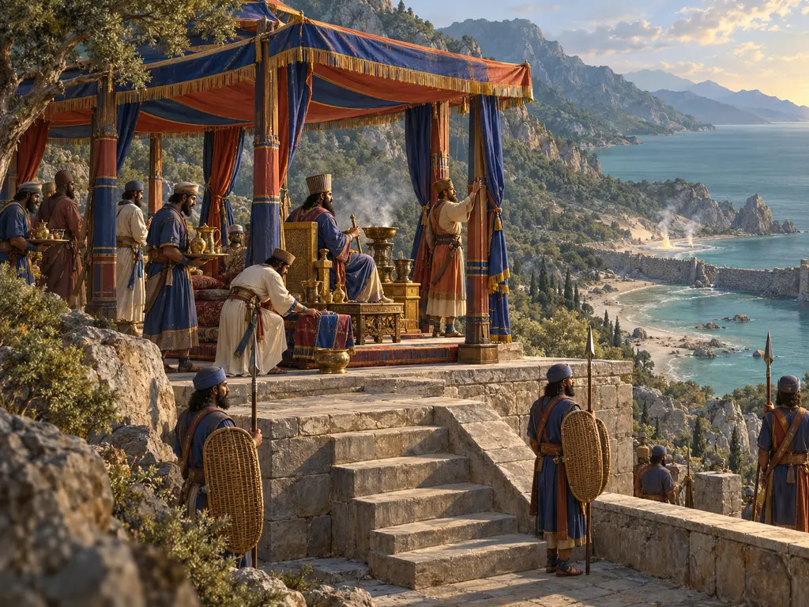
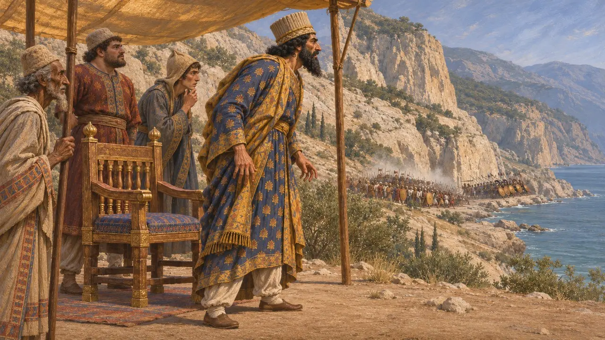
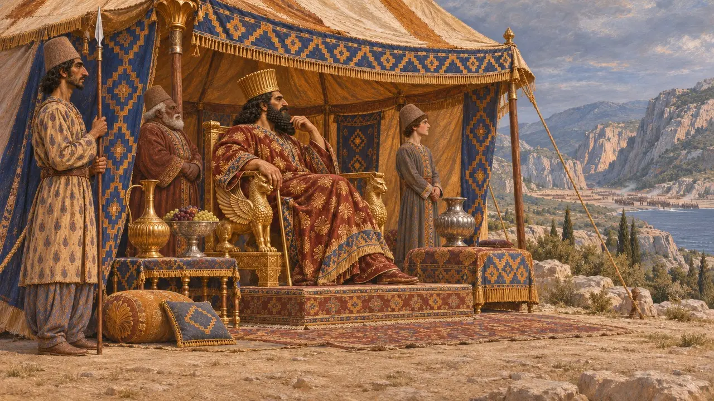
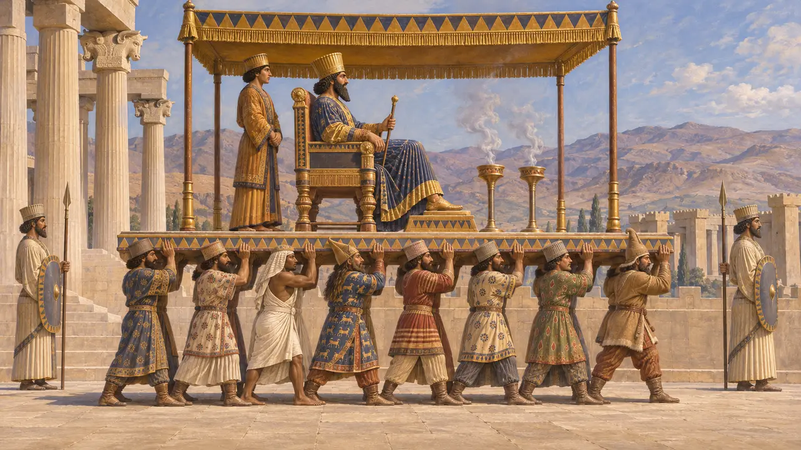
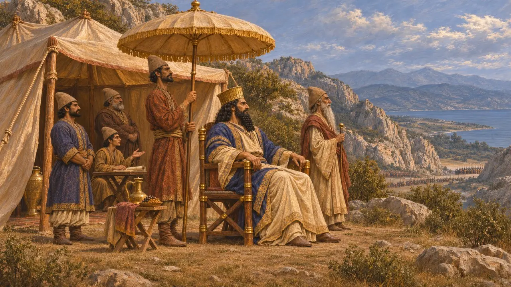
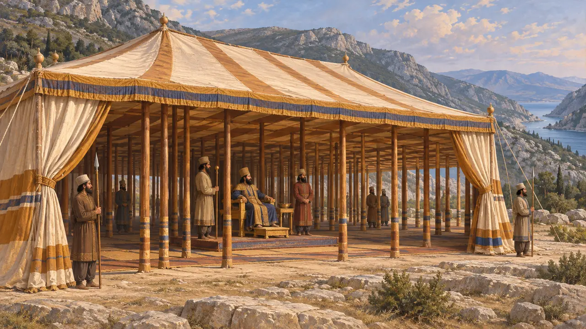

سراپردهٔ شاه
جایگاه شاهی که خشایارشا از آن نبرد ترموپیل را تماشا کرد، 480 پ.م.
در بازی: مرحلهٔ ۱۰: دروازههای داغ
هرودوت میگوید خشایارشا در سال 480 پ.م. نبرد ترموپیل را از جایگاهی شاهانه تماشا کرد و گفتهاند که سه بار از بیم سپاهیانش از جا برجست. شاهان پارسی با تختها، سایبانها و سراپردههای پرآذین سفر میکردند، و شاهِ نشسته در زیر سایبان، نمادی کانونی از قدرت شاهی بود. از جایگاه ترموپیل چیزی بر جای نمانده و شکل آن ناشناخته است.
در بازی: تنها در ترموپیل ساخته میشود و برای سکو و پلکان سنگ آهک، برای ستونهای نقاشیشدهاش الوار و برای آویزهایش پارچهٔ سارد میخواهد. هیچ منبعی چنین بنایی را توصیف نمیکند؛ یک خیمه و تختی قابلحمل محتملتر است.

خشایارشا تنگه را مینگرد
روایت باستانیهرودوت میگوید خشایارشا چهار روز در ترموپیل درنگ کرد، به این امید که یونانیان عقب بنشینند، و سپس مادها و کیسیان را به نبرد فرستاد. شاه در جریان نبرد از فراز تختی نظاره میکرد. هرودوت این روایت را نقل میکند که او از بیم سپاهش سه بار از جای خود برجست. او نه این تخت را وصف میکند و نه آنچه گرداگردش بود، و جای دقیق آن را نیز نمیگوید.
Herodotus 7.210-212

تخت و خیمهای در لشکرکشی
روایت باستانیهرودوت در لحظههای دیگری از لشکرکشی نیز خشایارشا را بر جایگاهی نشسته وصف میکند. در آبیدوس او بر تختی از سنگ سپید که بر تپهای نهاده بودند نشست تا سپاه و ناوگانش را بنگرد. در سالامیس از دامنهٔ کوه آیگالئوس نبرد را تماشا کرد و دبیران نام کسانی را که دلیرانه جنگیدند ثبت میکردند. هرودوت همچنین سراپردهٔ شاهی را وصف میکند که برای مردونیه بر جای ماند و پس از پلاته به چنگ یونانیان افتاد؛ سراپردهای آراسته به زر و نقره و پردههای زردوزیشده.
Herodotus 7.44; 8.90; 9.82

شاه بر تخت در هنر پارسی
در اسناداسناد پارسی دربارهٔ ترموپیل خاموشاند، اما نشان میدهند که شاه دوست داشت هنگام نشستن چگونه دیده شود. نقشبرجستههای بارعام که در خزانهٔ تخت جمشید یافت شدهاند، شاه را بر تختی با پشتی بلند نشان میدهند که پاهایش بر چارپایهای است؛ پیکری که معمولاً ولیعهد دانسته میشود پشت سر او ایستاده و بخوردانهایی پیش روی اوست. نقشبرجستههای درگاههای تخت جمشید شاه را بر تخت و زیر سایبانی ریشهدار نشان میدهند، در حالی که پیکرههای اقوام تابع تخت او را بر دوش دارند.
E. F. Schmidt, Persepolis I, 1953

آنچه بهراستی در ترموپیل برپا بود
مورد مناقشهدر ترموپیل هیچ بقایایی از جایگاه یا سراپردهٔ شاهی یافت نشده و محل آن ناشناخته است. سپاهی که تنها چند روز درنگ میکرد، به احتمال زیاد از خیمه، تختی قابل حمل و چتری شاهانه بهره میبرد، نه از سکویی سنگی که از پیش ساخته شده باشد. برخی تاریخنگاران شاهِ هراسانِ هرودوت را، که از جا میجهد، بنمایهای ادبیِ یونانی میدانند. بنا بر این دیدگاه، این صحنه بیش از آنکه از رسم پارسیان بگوید، از تصوری سخن میگوید که یونانیان از خشایارشا داشتند.
P. Briant, From Cyrus to Alexander, 2002

چادری که به اودئون بدل شد
افسانهٔ متأخرنویسندگان دورهٔ رومی گزارش کردهاند که اودئون پریکلس در آتن، تالاری سرپوشیده با ستونهای بسیار، از روی سراپردهٔ شاه ساخته شده بود. پاوسانیاس جهانگرد و پلوتارک هر دو این را همچون روایتی شنیدهشده بازگو میکنند. آنان حدود شش سده پس از جنگ مینوشتند و درستی این داستان را نمیتوان آزمود. م. ک. میلر استدلال کرده است که سراپردههای غنیمتگرفتهٔ پارسی شاید بهراستی بر معماری آتنی اثر گذاشته باشند.
Pausanias 1.20.4; Plutarch, Pericles 13
منابع
- Herodotus 7.210-212
- Herodotus 7.44; 8.90; 9.82
- E. F. Schmidt, Persepolis I, 1953
- P. Briant, From Cyrus to Alexander, 2002
- M. C. Miller, Athens and Persia in the Fifth Century BC, 1997
- Pausanias 1.20.4; Plutarch, Pericles 13